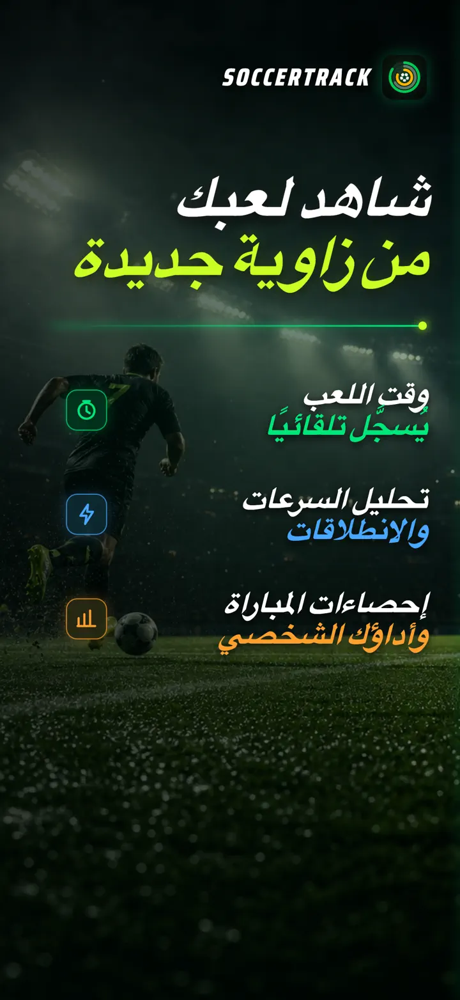
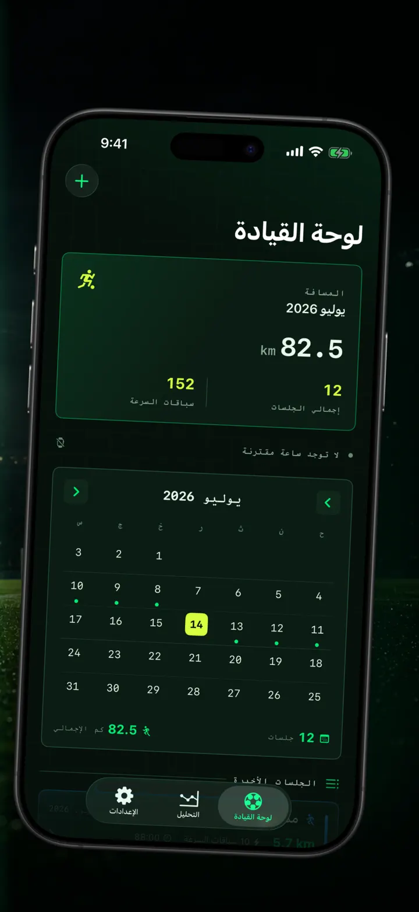
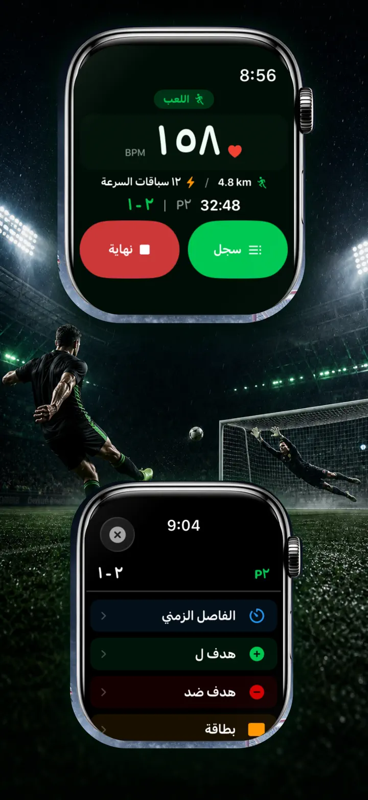
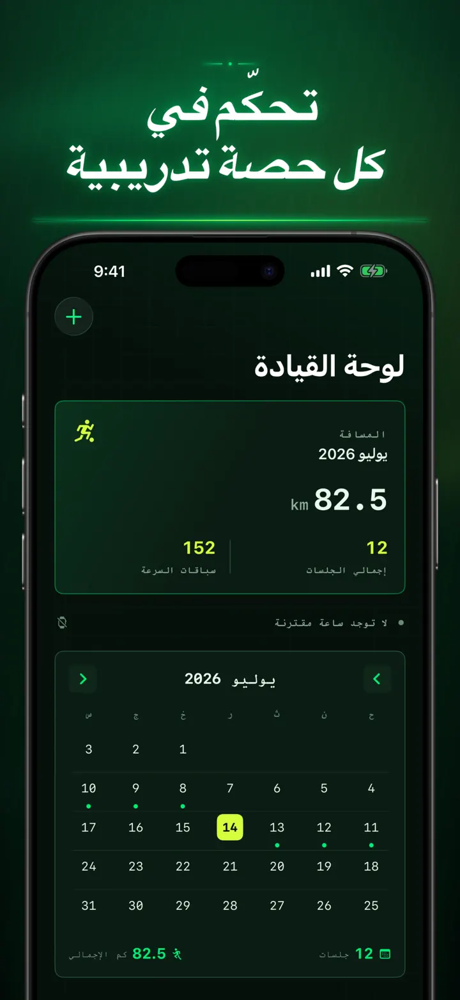
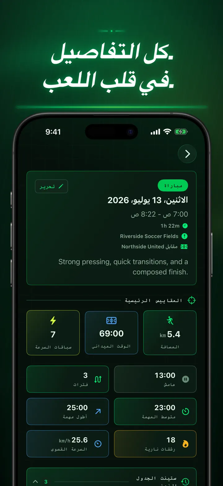
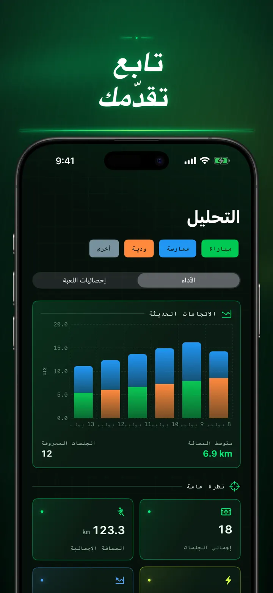
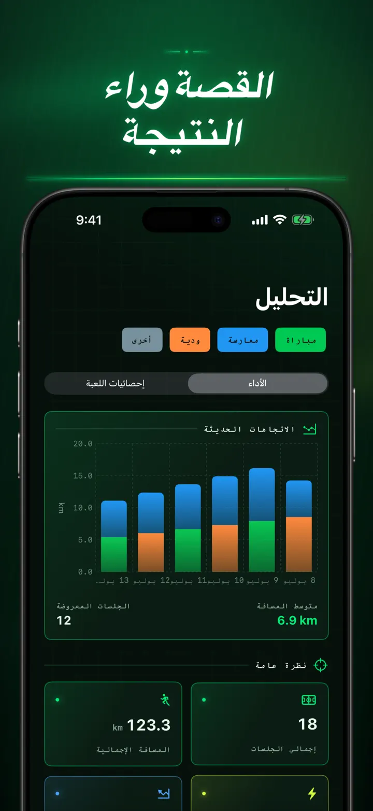
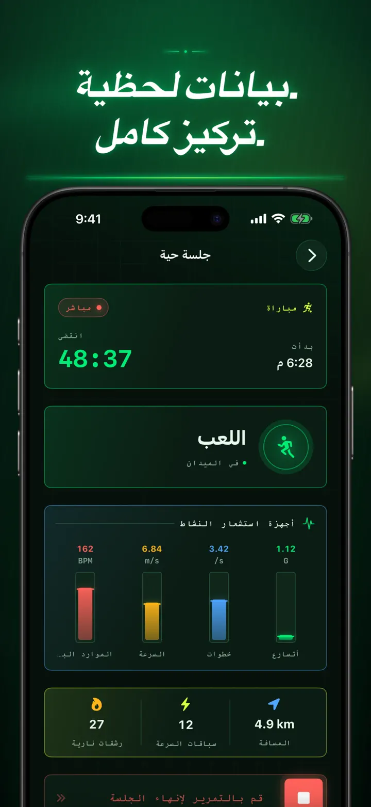
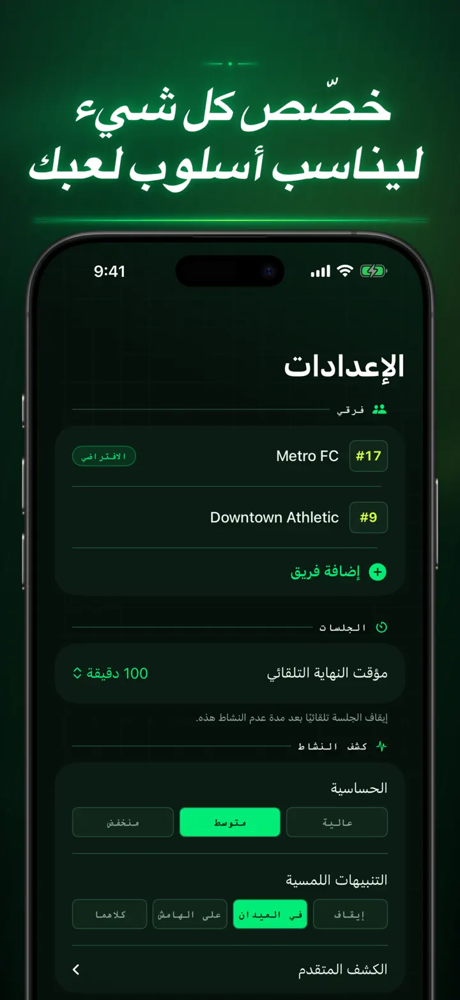
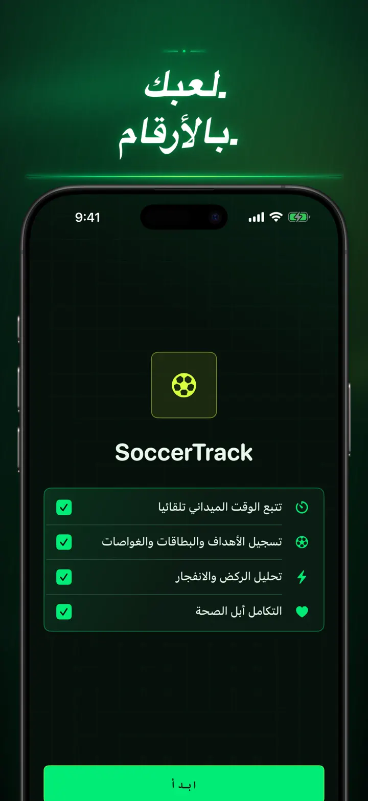

Soccer Time Track
وقت اللعب وتحليل كرة القدم
ابدأ جلسة ثم العب. تفصل Apple Watch تلقائيًا وقت الملعب عن دكة البدلاء وتسجل القياسات المباشرة والسرعات وأحداث المباراة والاتجاهات.
تنزيل من App Store
حول التطبيق
شاهد مباراتك من زاوية مختلفة.
تحوّل Soccer Time Track ساعة Apple Watch إلى رفيق يوم المباراة للاعبين الذين يريدون فهم ما هو أبعد من النتيجة النهائية. ابدأ من معصمك وركز على اللعب، ثم راجع على iPhone صورة مفصلة لأدائك.
وقت الملعب تلقائيًا
اعرف متى كنت في قلب اللعب فعلًا. تساعد إشارات الحركة والتمرين والموقع في التمييز بين اللعب والنشاط المنخفض والجلوس على دكة البدلاء. ستحصل على:
- وقت الملعب ووقت دكة البدلاء
- فترات اللعب وخط زمني واضح للجلسة
- تفصيل دقيق لكيفية سير الجلسة
يوم المباراة من معصمك
اختر مباراة أو تدريبًا أو مباراة ودية أو غير ذلك. وأثناء اللعب، سجّل:
- الأهداف لفريقك وعليه
- أهدافك وتمريراتك الحاسمة
- البطاقات الصفراء والحمراء
- التبديلات وتغييرات الأشواط
أداؤك بالأرقام
تجاوز عدد الدقائق مع قياسات تشمل:
- المسافة
- السرعة المتوسطة والقصوى
- السرعات والانطلاقات عالية الشدة
- معدل ضربات القلب والسعرات النشطة
- وتيرة الخطوات والتسارع
بيانات مباشرة وتركيز كامل
يمكن لجهاز iPhone مقترن عرض القياسات مباشرة بينما تواصل Apple Watch تسجيل التمرين. تبقى مركزًا على المباراة وتتجمع بياناتك في الخلفية.
تابع تقدمك
اجمع المباريات والتدريبات والوديات والجلسات الأخرى في سجل واحد. استكشف الاتجاهات والأرقام الشخصية، وقارن الأداء، وأضف الفريق ورقم القميص والخصم والموقع والملاحظات للاحتفاظ بقصة كل نتيجة.
تحتاج إلى بياناتك في مكان آخر؟ صدّر الجلسات وفترات اللعب وأحداث المباراة بتنسيق CSV أو JSON.
مصمم لـ APPLE WATCH وAPPLE HEALTH
بإذنك، تستخدم Soccer Time Track بيانات التمرين ومعدل ضربات القلب والحركة والموقع لإنشاء التحليلات وحفظ تمارين كرة القدم المكتملة في Apple Health. يتطلب التتبع التلقائي Apple Watch. ويمكنك أيضًا إضافة جلسة يدويًا على iPhone.
بياناتك، مباراتك
تبقى جلساتك على أجهزتك، ومع تشغيل مزامنة iCloud، في قاعدة بيانات iCloud الخاصة بك. لا تتطلب Soccer Time Track حسابًا، ولا تعرض إعلانات، ولا تستخدم تحليلات من جهات خارجية.
توقف عن تخمين المدة التي لعبتها. واعرف ما الذي حققته بكل دقيقة.
سياسة الخصوصية: https://masawata.net/SoccerTimeTrack/privacy-policy.html شروط الخدمة: https://www.apple.com/legal/internet-services/itunes/dev/stdeula/
لقطات الشاشة









Soccer Time Track
ابدأ جلسة ثم العب. تفصل Apple Watch تلقائيًا وقت الملعب عن دكة البدلاء وتسجل القياسات المباشرة والسرعات وأحداث المباراة والاتجاهات.
تنزيل من App Store